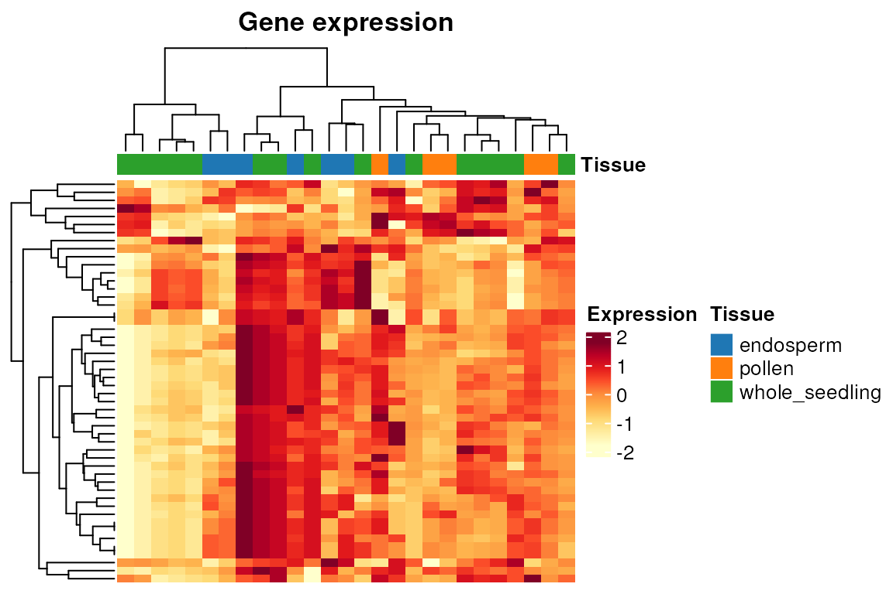
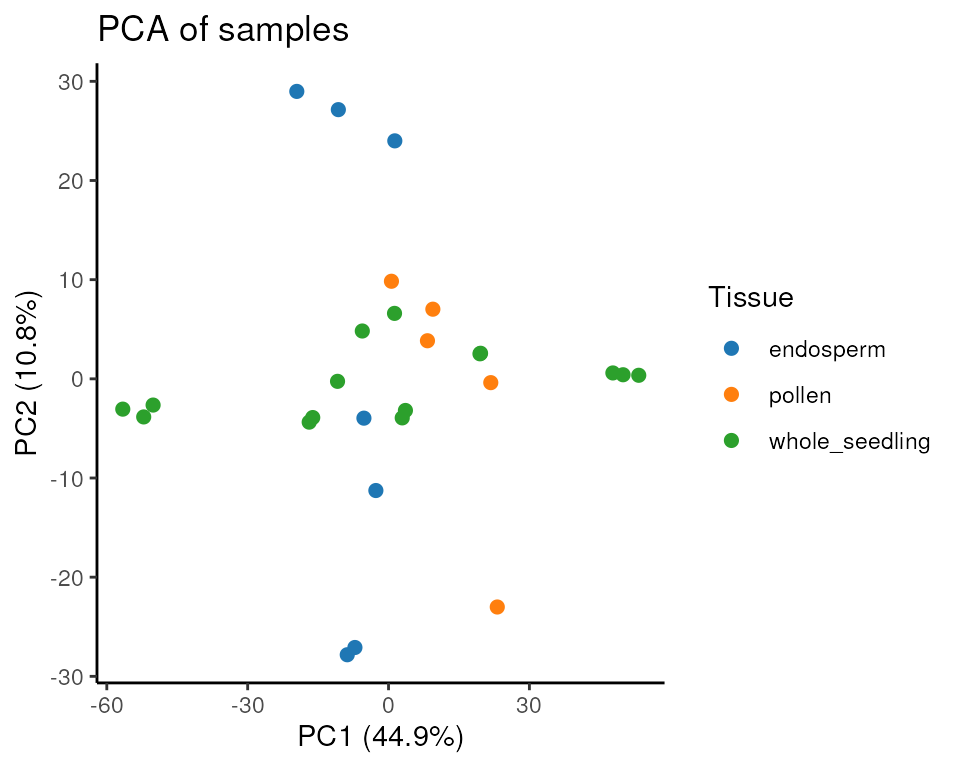
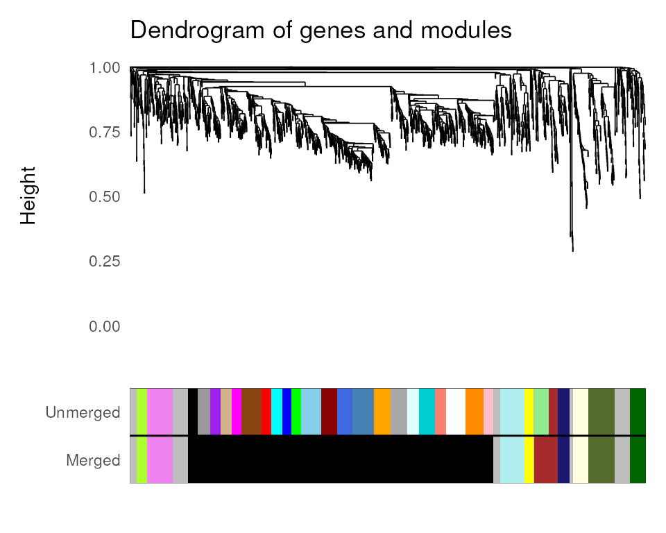
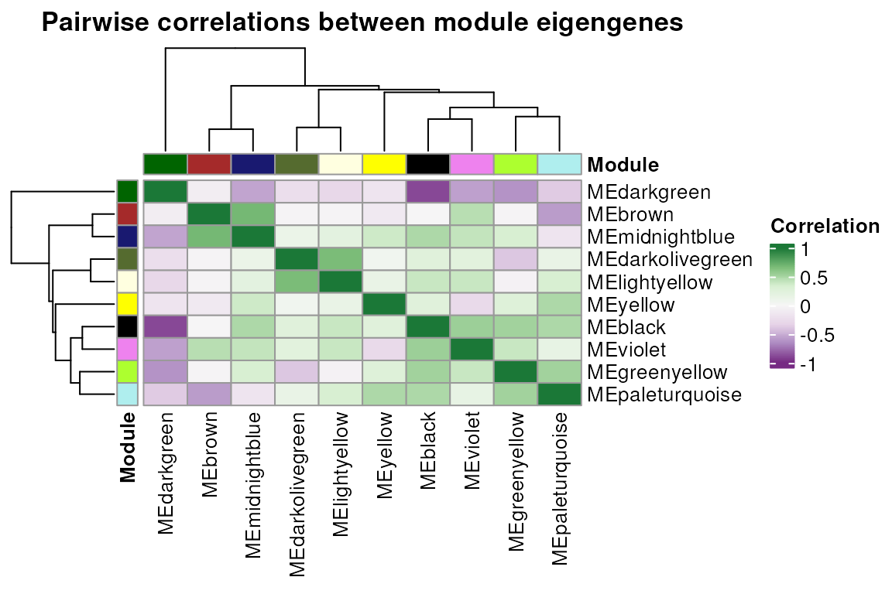
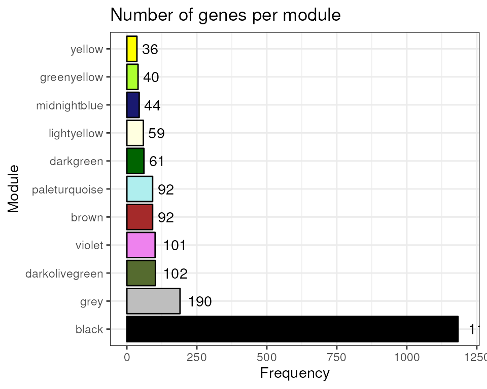
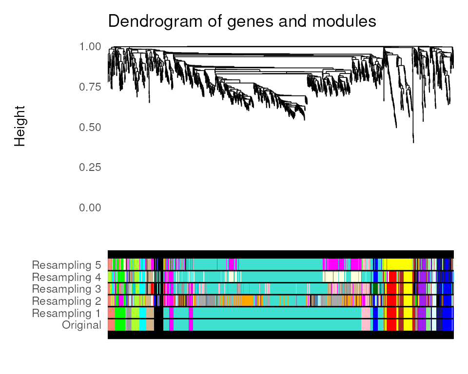
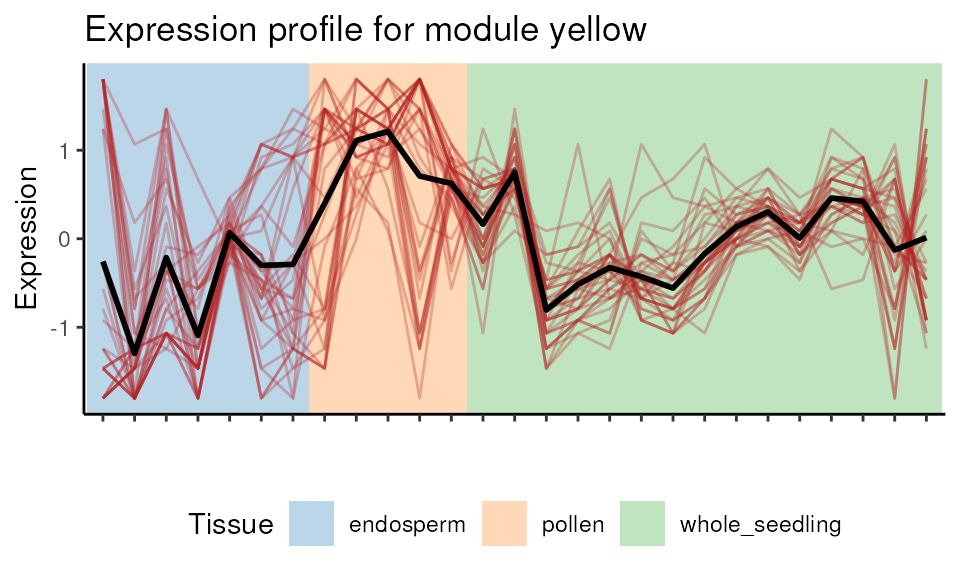
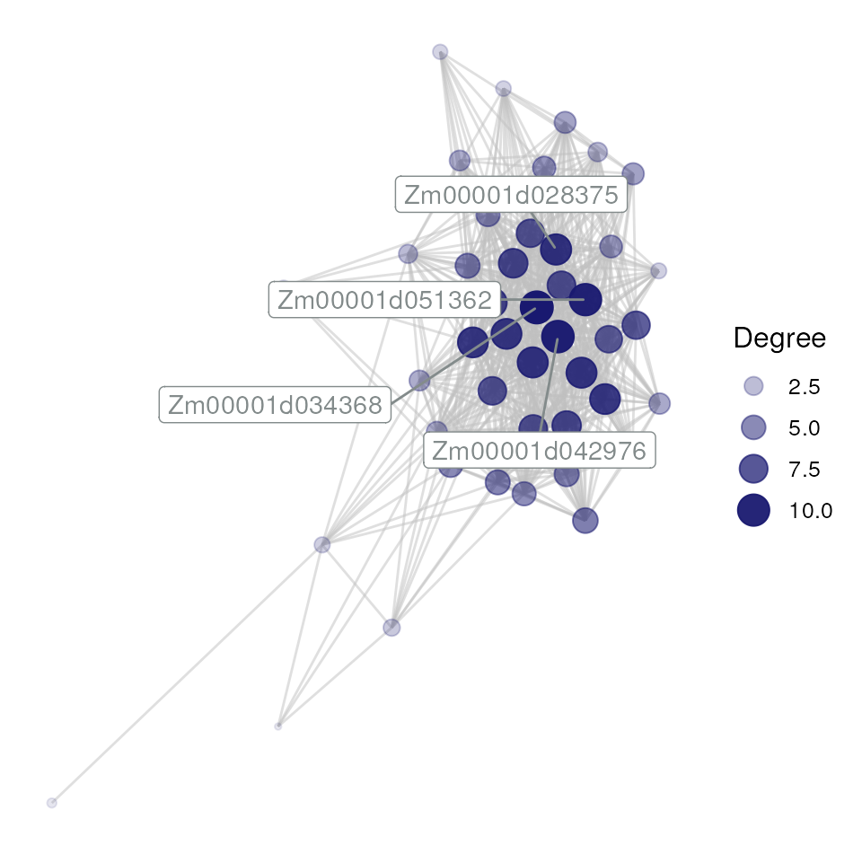

Gene coexpression network inference
Fabricio Almeida-Silva
Universidade Estadual do Norte Fluminense Darcy Ribeiro, RJ, BrazilThiago Motta Venancio
Universidade Estadual do Norte Fluminense Darcy Ribeiro, RJ, BrazilSource:
vignettes/vignette_01_GCN_inference.Rmd
vignette_01_GCN_inference.RmdIntroduction
To date, several packages have been developed to infer gene coexpression networks from expression data, such as WGCNA (Langfelder and Horvath 2008), CEMiTool (Russo et al. 2018) and petal (Petereit et al. 2016). However, network inference and analysis is a non-trivial task that requires solid statistical background, especially for data preprocessing and proper interpretation of results. Because of that, inexperienced researchers often struggle to choose the most suitable algorithms for their projects. Besides, different packages are required for each step of a standard network analysis, and their distinct syntaxes can hinder interoperability between packages, particularly for non-advanced R users. Here, we have developed an all-in-one R package that uses state-of-the-art algorithms to facilitate the workflow of biological network analysis, from data acquisition to analysis and interpretation. This will likely accelerate network analysis pipelines and advance systems biology research.
Installation
if(!requireNamespace('BiocManager', quietly = TRUE))
install.packages('BiocManager')
BiocManager::install("BioNERO")Data loading and preprocessing
For this tutorial, we will use maize (Zea mays) gene
expression data normalized in TPM. The data were obtained from Shin et al. (2020) and were filtered for package
size issues. For more information on the data set, see
?zma.se. The data set is stored as a SummarizedExperiment
object.1
The input expression data in BioNERO can be both a
SummarizedExperiment object or a gene expression matrix or data frame
with genes in rows and samples in columns. However, we strongly
recommend using SummarizedExperiment objects for easier interoperability
with other Bioconductor packages.
data(zma.se)
# Take a quick look at the data
zma.se
## class: SummarizedExperiment
## dim: 10802 28
## metadata(0):
## assays(1): ''
## rownames(10802): ZeamMp030 ZeamMp044 ... Zm00001d054106 Zm00001d054107
## rowData names(0):
## colnames(28): SRX339756 SRX339757 ... SRX2792103 SRX2792104
## colData names(1): Tissue
SummarizedExperiment::colData(zma.se)
## DataFrame with 28 rows and 1 column
## Tissue
## <character>
## SRX339756 endosperm
## SRX339757 endosperm
## SRX339758 endosperm
## SRX339762 endosperm
## SRX339763 endosperm
## ... ...
## SRX2792107 whole_seedling
## SRX2792108 whole_seedling
## SRX2792102 whole_seedling
## SRX2792103 whole_seedling
## SRX2792104 whole_seedlingStep-by-step data preprocessing
This section is suitable for users who want to have more control of their data analysis, as they can inspect the data set after each preprocessing step and analyze how different options to the arguments would affect the expression data. If you want a quick start, you can skip to the next section (Automatic, one-step data preprocessing).
Step 1: Replacing missing values. By default,
replace_na() will replace NAs with 0. Users can also
replace NAs with the mean of each row (generally not advisable, but it
can be useful in very specific cases).
exp_filt <- replace_na(zma.se)
sum(is.na(zma.se))
## [1] 0Step 2: Removing non-expressed genes. Here, for
faster network reconstruction, we will remove every gene whose median
value is below 10. The function’s default for min_exp is 1.
For other options, see ?remove_nonexp.
exp_filt <- remove_nonexp(exp_filt, method = "median", min_exp = 10)
dim(exp_filt)
## [1] 8529 28Step 3 (optional): Filtering genes by variance. It is reasonable to remove genes whose expression values do not vary much across samples, since we often want to find genes that are more or less expressed in particular conditions. Here, we will keep only the top 2000 most variable genes. Users can also filter by percentile (e.g., the top 10% most variable genes).
exp_filt <- filter_by_variance(exp_filt, n = 2000)
dim(exp_filt)
## [1] 2000 28Step 4: Removing outlying samples. There are several
methods to remove outliers. We have implemented the Z.K (standardized
connectivity) method (Oldham, Langfelder, and
Horvath 2012) in ZKfiltering(), which is a
network-based approach to remove outliers. This method has proven to be
more suitable for network analysis, since it can remove outliers that
other methods (such as hierarchical clustering) cannot identify. By
default, BioNERO considers all samples with ZK < 2 as outliers, but
this parameter is flexible if users want to change it.
exp_filt <- ZKfiltering(exp_filt, cor_method = "pearson")
## Number of removed samples: 1
dim(exp_filt)
## [1] 2000 27Step 5: Adjusting for confounding artifacts. This is an important step to avoid spurious correlations resulting from confounders. The method was described by Parsana et al. (2019), who developed a principal component (PC)-based correction for confounders. After correction, the expression data are quantile normalized, so every gene follows an approximate normal distribution.
exp_filt <- PC_correction(exp_filt)Automatic, one-step data preprocessing
Alternatively, users can preprocess their data with a single
function. The function exp_preprocess() is a wrapper for
the functions replace_na(), remove_nonexp(),
filter_by_variance(), ZKfiltering() and
PC_correction(). The arguments passed to
exp_preprocess() will be used by each of these functions to
generate a filtered expression data frame in a single step.2
final_exp <- exp_preprocess(
zma.se, min_exp = 10, variance_filter = TRUE, n = 2000
)
## Number of removed samples: 1
identical(dim(exp_filt), dim(final_exp))
## [1] TRUE
# Take a look at the final data
final_exp
## class: SummarizedExperiment
## dim: 2000 27
## metadata(0):
## assays(1): ''
## rownames(2000): ZeamMp030 ZeamMp092 ... Zm00001d054093 Zm00001d054107
## rowData names(0):
## colnames(27): SRX339756 SRX339757 ... SRX2792103 SRX2792104
## colData names(1): TissueExploratory data analysis
BioNERO includes some functions for easy data
exploration. These functions were created to avoid having to type code
chunks that, although small, will be used many times. The idea here is
to make the user experience with biological network analysis as easy and
simple as possible.
Plotting heatmaps: the function
plot_heatmap() plots heatmaps of correlations between
samples or gene expression in a single line. Users can use their
preferred RColorBrewer’s palette, hide/show gene names, and
activate/deactivate clustering for rows and/or columns.
# Heatmap of sample correlations
p <- plot_heatmap(final_exp, type = "samplecor")
p
# Heatmap of gene expression
p <- plot_heatmap(final_exp, type = "expr")
p
Principal component analysis (PCA): the function
plot_PCA() performs a PCA and plots PC1 vs PC2 (by
default), as well the percentage of variance explained by each PC. Users
can also choose to plot PC1 vs PC3 or PC2 vs PC3.
plot_PCA(final_exp)
Gene coexpression network inference
Now that we have our filtered and normalized expression data, we can
reconstruct a gene coexpression network (GCN) with the WGCNA algorithm
(Langfelder and Horvath 2008). First of
all, we need to identify the most suitable \(\beta\) power that makes the network
satisfy the scale-free topology. We do that with the function
SFT_fit(). Correlation values are raised to a power \(\beta\) to amplify their distances and,
hence, to make the module detection algorithm more powerful. The higher
the value of \(\beta\), the closer to
the scale-free topology the network is. However, a very high \(\beta\) power reduces mean connectivity,
which is not desired. To solve this trade-off, we pick the lowest \(\beta\) power above a certain threshold (by
default in SFT_fit(), 0.8). This makes the network close to
the scale-free topology without dramatically reducing the mean
connectivity.
sft <- SFT_fit(final_exp, net_type = "signed hybrid", cor_method = "pearson")
## Power SFT.R.sq slope truncated.R.sq mean.k. median.k. max.k.
## 1 3 0.220 -0.218 0.178 278.0 303.00 598.0
## 2 4 0.416 -0.382 0.272 196.0 199.00 472.0
## 3 5 0.573 -0.468 0.462 145.0 136.00 381.0
## 4 6 0.675 -0.536 0.584 110.0 95.70 312.0
## 5 7 0.748 -0.584 0.676 86.3 70.00 259.0
## 6 8 0.791 -0.653 0.735 68.8 51.90 221.0
## 7 9 0.803 -0.717 0.761 55.8 38.60 191.0
## 8 10 0.815 -0.775 0.790 45.8 29.90 167.0
## 9 11 0.821 -0.828 0.815 38.1 22.90 147.0
## 10 12 0.838 -0.874 0.850 32.0 17.90 130.0
## 11 13 0.847 -0.913 0.876 27.2 14.30 116.0
## 12 14 0.856 -0.943 0.893 23.2 11.80 104.0
## 13 15 0.875 -0.973 0.913 20.0 9.79 93.0
## 14 16 0.892 -0.997 0.937 17.3 8.00 83.9
## 15 17 0.897 -1.020 0.941 15.1 6.75 76.0
## 16 18 0.891 -1.070 0.948 13.3 5.79 69.7
## 17 19 0.888 -1.100 0.950 11.7 4.96 64.2
## 18 20 0.888 -1.130 0.957 10.4 4.27 59.4
sft$power
## [1] 9
power <- sft$powerAs we can see, the optimal power is 9. However, we strongly
recommend a visual inspection of the simulation of different
\(\beta\) powers, as WGCNA can fail to
return the most appropriate \(\beta\)
power in some cases.3 The function SFT_fit()
automatically saves a ggplot object in the second element of the
resulting list. To visualize it, you simply have to access the plot.
sft$plotNow, we can use the power calculated by SFT_fit() to
infer the GCN. The function exp2gcn() infers a GCN and
outputs a list of 7 elements, each of which will be used by other
functions in the analysis pipeline.
net <- exp2gcn(
final_exp, net_type = "signed hybrid", SFTpower = power,
cor_method = "pearson"
)
## ..connectivity..
## ..matrix multiplication (system BLAS)..
## ..normalization..
## ..done.
names(net)
## [1] "adjacency_matrix" "MEs" "genes_and_modules"
## [4] "kIN" "correlation_matrix" "params"
## [7] "dendro_plot_objects"The function exp2gcn() saves objects in the last element
of the resulting list that can be subsequently used to plot common
figures in GCN papers. The figures are publication-ready and display i.
a dendrogram of genes and modules; ii. heatmap of pairwise correlations
between module eigengenes.
# Dendro and colors
plot_dendro_and_colors(net)
## NULL
# Eigengene networks
plot_eigengene_network(net)
## NULLLet’s see the number of genes per module.

Gene coexpression network analysis
Now that we have our coexpression network, we can start exploring some of its properties.
Assessing module stability
The function module_stability() allows users to check if
the identified coexpression modules are stable (i.e., if they can resist
removal of a particular sample). This function will resample the data
set and rerun the module detection algorithm n times (default:
30) and return a PDF figure displaying a gene dendrogram and colors
representing modules identified in each run. By looking at the figure,
you can detect if a particular module is only found in a very small
fraction of the runs, which suggests instability. Here, we will perform
only 5 resampling runs for demonstration purposes.4
module_stability(final_exp, net, nRuns = 5)
## ...working on run 1 ..
## ...working on run 2 ..
## ...working on run 3 ..
## ...working on run 4 ..
## ...working on run 5 ..
## ...working on run 6 ..
## NULLModule-trait associations
The function module_trait_cor() can be used to calculate
module-trait correlations. This analysis is useful to identify modules
that are positively or negatively correlated with particular traits,
which means that their gene expression levels go up or down in these
conditions. Here, tissues will be considered traits, so we want to
identify groups of genes whose expression levels are inhibited or
induced in particular tissues. Alternatively, one can use continuous
variables (e.g., metabolite content, protein concentration, height) or
discrete variables (e.g., disease index) as traits.5
MEtrait <- module_trait_cor(
exp = final_exp, MEs = net$MEs, cor_method = "pearson"
)
head(MEtrait)
## ME trait cor pvalue
## 1 MEblack endosperm 0.12925374 0.5205188
## 2 MEblack pollen 0.11154977 0.5796226
## 3 MEblack whole_seedling -0.20119355 0.3142702
## 4 MEbrown endosperm -0.02538113 0.8999982
## 5 MEbrown pollen 0.06199200 0.7587116
## 6 MEbrown whole_seedling -0.02607732 0.8972693The function module_trait_cor() also allows for plot
customization. For instance:
# Transpose the matrix and change palette (RColorBrewer palette)
MEtrait <- module_trait_cor(
exp = final_exp,
MEs = net$MEs,
cor_method = "pearson",
transpose = TRUE, palette = "PRGn",
cex.text = 0.7, cex.lab.y = 0.7
)
Visualizing module expression profile
The heatmap above shows that genes in the yellow module are
negatively correlated with endosperm samples. We can visually explore it
with plot_expression_profile().
plot_expression_profile(
exp = final_exp,
net = net,
plot_module = TRUE,
modulename = "yellow"
)
Enrichment analysis
After identifying modules that are inhibited or enhanced in particular tissues, users would likely want to find to which biological processes (e.g., GO biological process) or pathways (e.g., Reactome, KEGG, MapMan) these genes are related. This can be done with enrichment analyses, which can uncover terms that are found more than expected by chance in a module.
The easiest way to accomplish this is to use the function
module_enrichment(), which performs enrichment analysis for
all modules at once. To illustrate it, we will scan coexpression modules
for enriched protein domains using all genes in the network as
background. The Interpro annotation was downloaded from the PLAZA 4.0
Monocots database (Van Bel et al.
2018).
# Enrichment analysis for conserved protein domains (Interpro)
data(zma.interpro)
interpro_enrichment <- module_enrichment(
net = net,
background_genes = rownames(final_exp),
annotation = zma.interpro
)
## Enrichment analysis for module black...
## Enrichment analysis for module brown...
## Enrichment analysis for module darkgreen...
## Enrichment analysis for module darkolivegreen...
## Enrichment analysis for module greenyellow...
## Enrichment analysis for module lightyellow...
## Enrichment analysis for module midnightblue...
## Enrichment analysis for module paleturquoise...
## Enrichment analysis for module violet...
## Enrichment analysis for module yellow...
# Print results without geneIDs for better visualization
interpro_enrichment[, -6]
## TermID genes all pval
## 809 Histone-fold 58 60 1.083394e-11
## 802 Histone H2A/H2B/H3 43 44 2.155952e-09
## 1877 Translation protein SH3-like domain 22 22 8.872064e-06
## 1878 Translation protein, beta-barrel domain 26 27 1.235834e-05
## 1394 Ribosomal protein L2 domain 2 18 18 7.448332e-05
## 186 Aquaporin transporter 3 5 9.644015e-05
## 187 Aquaporin-like 3 5 9.644015e-05
## 906 Major intrinsic protein 3 5 9.644015e-05
## 907 Major intrinsic protein, conserved site 3 5 9.644015e-05
## padj Module
## 809 2.178705e-08 black
## 802 2.167810e-06 black
## 1877 5.947240e-03 black
## 1878 6.213155e-03 black
## 1394 2.995719e-02 black
## 186 4.848528e-02 midnightblue
## 187 4.848528e-02 midnightblue
## 906 4.848528e-02 midnightblue
## 907 4.848528e-02 midnightblueAs we can see, two modules are enriched in genes with particular
protein domains. We could get the same result with the function
enrichment_analysis(), which performs enrichment analysis
for a user-defined gene set instead of all modules. 6
Hub gene identification
Hub genes are often identified using two different metrics:
module membership (MM) (i.e., correlation of a gene to
its module eigengene) and degree (i.e., sum of
connection weights of a gene to all other genes in the module). Some
researchers consider the top 10% genes with the highest degree as hubs,
while others consider those with MM > 0.8. To avoid false positives,
BioNERO’s algorithm combines both metrics and defines hub
genes as the top 10% genes with highest degree that have MM > 0.8.
Hubs can be identified with the function
get_hubs_gcn().
hubs <- get_hubs_gcn(final_exp, net)
head(hubs)
## Gene Module kWithin
## 1 Zm00001d033147 black 188.3864
## 2 Zm00001d049790 black 181.4522
## 3 Zm00001d005649 black 180.7062
## 4 Zm00001d045448 black 180.6744
## 5 Zm00001d008203 black 178.7147
## 6 Zm00001d023340 black 177.7553Extracting subgraphs
Subgraph extraction can be particularly useful to visualize specific
modules, and it can be done with the function
get_edge_list(). The function returns the subgraph as an
edge list. Users can also extract an edge list for a particular gene set
instead of a module.
edges <- get_edge_list(net, module="midnightblue")
head(edges)
## Gene1 Gene2 Weight
## 45 Zm00001d001857 Zm00001d002384 0.9401886
## 89 Zm00001d001857 Zm00001d002690 0.9675345
## 90 Zm00001d002384 Zm00001d002690 0.9185426
## 133 Zm00001d001857 Zm00001d003962 0.7178340
## 134 Zm00001d002384 Zm00001d003962 0.6534956
## 135 Zm00001d002690 Zm00001d003962 0.6840004The function get_edge_list() returns a fully connected
subgraph for the specified module or gene set. However, filtering weak
correlations is desirable and can be accomplished by setting the
argument filter = TRUE, which will remove edges based on
one of optimal scale-free topology fit (default), p-value, Z-score, or
an arbitrary minimum correlation coefficient. 7 For more details
details, check ?get_edge_list().
# Remove edges based on optimal scale-free topology fit
edges_filtered <- get_edge_list(net, module = "midnightblue", filter = TRUE)
## The correlation threshold that best fits the scale-free topology is 0.7
dim(edges_filtered)
## [1] 588 3
# Remove edges based on p-value
edges_filtered <- get_edge_list(
net, module = "midnightblue",
filter = TRUE, method = "pvalue",
nSamples = ncol(final_exp)
)
dim(edges_filtered)
## [1] 921 3
# Remove edges based on minimum correlation
edges_filtered <- get_edge_list(
net, module = "midnightblue",
filter = TRUE, method = "min_cor", rcutoff = 0.7
)
dim(edges_filtered)
## [1] 588 3Network visualization
As we now have an edge list for a module, let’s visualize it with the
function plot_gcn(). By default, this function only labels
the top 5 hubs (or less if there are less than 5 hubs). However, this
can be customized according to the user’s preference (see
?plot_gcn for more information).
plot_gcn(
edgelist_gcn = edges_filtered,
net = net,
color_by = "module",
hubs = hubs
)
Networks can also be visualized interactively by setting
interactive = TRUE in plot_gcn.
Network statistics
Finally, the function net_stats() can be used to
calculate the main network statistics (or properties, or indices),
namely: connectivity, scaled connectivity,
clustering coefficient, maximum adjacency ratio,
density, centralization, heterogeneity,
diameter, betweenness (optional), and
closeness (optional).
Depending on your system capacities and network size, this may take a very long time. Hence, if you are willing to calculate network statistics for your data set, grab a cup of coffee, because the waiting may be long.
Session information
This vignette was created under the following conditions:
sessionInfo()
## R version 4.2.1 (2022-06-23)
## Platform: x86_64-pc-linux-gnu (64-bit)
## Running under: Ubuntu 20.04.4 LTS
##
## Matrix products: default
## BLAS: /usr/lib/x86_64-linux-gnu/openblas-pthread/libblas.so.3
## LAPACK: /usr/lib/x86_64-linux-gnu/openblas-pthread/liblapack.so.3
##
## locale:
## [1] LC_CTYPE=en_US.UTF-8 LC_NUMERIC=C
## [3] LC_TIME=en_US.UTF-8 LC_COLLATE=en_US.UTF-8
## [5] LC_MONETARY=en_US.UTF-8 LC_MESSAGES=en_US.UTF-8
## [7] LC_PAPER=en_US.UTF-8 LC_NAME=C
## [9] LC_ADDRESS=C LC_TELEPHONE=C
## [11] LC_MEASUREMENT=en_US.UTF-8 LC_IDENTIFICATION=C
##
## attached base packages:
## [1] stats graphics grDevices utils datasets methods base
##
## other attached packages:
## [1] BioNERO_1.5.2 BiocStyle_2.24.0
##
## loaded via a namespace (and not attached):
## [1] backports_1.4.1 circlize_0.4.15
## [3] Hmisc_4.7-1 systemfonts_1.0.4
## [5] plyr_1.8.7 igraph_1.3.4
## [7] splines_4.2.1 GENIE3_1.18.0
## [9] BiocParallel_1.30.3 GenomeInfoDb_1.32.3
## [11] ggnetwork_0.5.10 ggplot2_3.3.6
## [13] sva_3.44.0 digest_0.6.29
## [15] foreach_1.5.2 htmltools_0.5.3
## [17] GO.db_3.15.0 fansi_1.0.3
## [19] magrittr_2.0.3 checkmate_2.1.0
## [21] memoise_2.0.1 cluster_2.1.4
## [23] doParallel_1.0.17 limma_3.52.2
## [25] annotate_1.74.0 ComplexHeatmap_2.12.1
## [27] fastcluster_1.2.3 Biostrings_2.64.1
## [29] matrixStats_0.62.0 pkgdown_2.0.6
## [31] jpeg_0.1-9 colorspace_2.0-3
## [33] blob_1.2.3 ggrepel_0.9.1
## [35] textshaping_0.3.6 xfun_0.32
## [37] dplyr_1.0.10 crayon_1.5.1
## [39] RCurl_1.98-1.8 jsonlite_1.8.0
## [41] genefilter_1.78.0 impute_1.70.0
## [43] survival_3.4-0 iterators_1.0.14
## [45] glue_1.6.2 gtable_0.3.1
## [47] zlibbioc_1.42.0 XVector_0.36.0
## [49] GetoptLong_1.0.5 DelayedArray_0.22.0
## [51] shape_1.4.6 BiocGenerics_0.42.0
## [53] abind_1.4-5 scales_1.2.1
## [55] edgeR_3.38.4 DBI_1.1.3
## [57] Rcpp_1.0.9 xtable_1.8-4
## [59] htmlTable_2.4.1 clue_0.3-61
## [61] foreign_0.8-82 bit_4.0.4
## [63] preprocessCore_1.58.0 Formula_1.2-4
## [65] stats4_4.2.1 htmlwidgets_1.5.4
## [67] httr_1.4.4 RColorBrewer_1.1-3
## [69] farver_2.1.1 XML_3.99-0.10
## [71] pkgconfig_2.0.3 nnet_7.3-17
## [73] sass_0.4.2 deldir_1.0-6
## [75] locfit_1.5-9.6 utf8_1.2.2
## [77] dynamicTreeCut_1.63-1 labeling_0.4.2
## [79] reshape2_1.4.4 tidyselect_1.1.2
## [81] rlang_1.0.5 AnnotationDbi_1.58.0
## [83] munsell_0.5.0 tools_4.2.1
## [85] cachem_1.0.6 cli_3.3.0
## [87] generics_0.1.3 RSQLite_2.2.16
## [89] statnet.common_4.6.0 evaluate_0.16
## [91] stringr_1.4.1 fastmap_1.1.0
## [93] yaml_2.3.5 ragg_1.2.2
## [95] RhpcBLASctl_0.21-247.1 knitr_1.40
## [97] bit64_4.0.5 fs_1.5.2
## [99] purrr_0.3.4 KEGGREST_1.36.3
## [101] nlme_3.1-159 compiler_4.2.1
## [103] rstudioapi_0.14 png_0.1-7
## [105] minet_3.54.0 tibble_3.1.8
## [107] statmod_1.4.37 bslib_0.4.0
## [109] stringi_1.7.8 highr_0.9
## [111] desc_1.4.1 lattice_0.20-45
## [113] Matrix_1.4-1 vctrs_0.4.1
## [115] pillar_1.8.1 lifecycle_1.0.1
## [117] networkD3_0.4 BiocManager_1.30.18
## [119] jquerylib_0.1.4 GlobalOptions_0.1.2
## [121] data.table_1.14.2 bitops_1.0-7
## [123] patchwork_1.1.2 GenomicRanges_1.48.0
## [125] R6_2.5.1 latticeExtra_0.6-30
## [127] bookdown_0.28 network_1.17.2
## [129] gridExtra_2.3 IRanges_2.30.1
## [131] codetools_0.2-18 SummarizedExperiment_1.26.1
## [133] rprojroot_2.0.3 rjson_0.2.21
## [135] S4Vectors_0.34.0 GenomeInfoDbData_1.2.8
## [137] intergraph_2.0-2 mgcv_1.8-40
## [139] parallel_4.2.1 grid_4.2.1
## [141] rpart_4.1.16 NetRep_1.2.4
## [143] coda_0.19-4 rmarkdown_2.16
## [145] MatrixGenerics_1.8.1 ggnewscale_0.4.7
## [147] Biobase_2.56.0 WGCNA_1.71
## [149] base64enc_0.1-3 interp_1.1-3